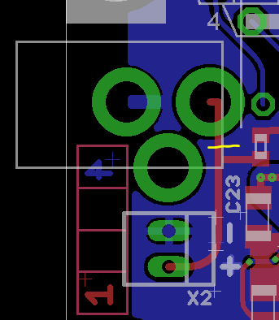

Is it possible to solder in a on/off switch somewhere in line (electrically) with the DC jack? I don't see any bridge or anything to cut.
Power Supply for stand alone use
johannes
#10
Sorry, this obvious modification escaped my attention during design...
It's possible but you'd need to desolder the DC input socket before you can access the trace to cut.

(yellow is cut line, and it is on the component side, tracks on the component side are in red).
The DC socket is probably the easiest thing to desolder as it has wide holes.
As an alternative, you could add a panel-mount DC socket, ignore the on-board socket, and connect (via a switch) to X2...
Questions about power input on board
AdrianWillaert
#12
Do you think this powerstation would be good for Axoloti? I need to power 4 axoloti but I don't want to use smartphone powersupply because of the noise.
{kind=link}
Inaba
#13
that specific power supply won't work on the 9V 100mA ports (just saying), as they might burn out because of the power draw.
i personally don't recommend anything under 600mA on 9Vdc (5,4W), as the axoloti can consume up to 4-5W max in total (using usb host port, microsd, io ports and such)
while using a axoloti core without anything connected i recomend at least 200mA on 9V just to be safe. 
so as long as you make sure the power supply aperage is above your need of current, you'll be fine.
johannes
#14
I need to warn for hotplugging a non-isolated power supply with Axoloti Core board revision 1.0 - I assume (and internet confirms) these power outputs are not be isolated from each other. If the positive "side" of the plug makes contact before the negative "side" current take a wrong path.
Also they're center-negative. Axoloti expects center-positive.
Schematic for V1.2 of the board?
stasibear
#15
I bought a universal AC adapter today and fried the board. I followed voltage recommendations above and had no other hardware connected. I can only assume the polarity was wrong, since the adapter a polarity switch whose label isn't very clear. After a short ozone smell, the board no longer powers up (and no response to DFU process).
I'm a cautionary tale, I suppose. Best wishes to this very cool community!
stasibear
#17
The adapter works in another device, so I don't think it's faulty. Thanks for the idea, though! It's a Rhino brand adapter from Fry's in the US.
johannes
#20
I believe it must have been something else than reverse polarity power input on the DC socket, there is a protection diode for that. Just (re)tested applying 20V reverse polarity, no sign of any damage.
Note that other power inputs (usb socket, solder pads) are not reverse polarity protected.
I will check with @stasibear...
Help me *not* blow up my axoloti with 9V power
stasibear
#21
I'm not sure what else to tell you - I also have doubts that I could fry the board so easily, having used it maybe 20 hours. The transformer I returned as defective. The unresponsive Axo Core I still have, and I can send it to you if you'd like to look at it (no replacement requested).
KHS
#22
Sorry to resurrect this thread for a question that may have already been answered in more universal terms, but I thought I'd ask about a specific (and I'm sure common) power supply option for the Axoloti: a 1-Spot adapter with a center-positive adapter. Are there any perceivable issues in using this configuration? My assumption is no, given it's a 9v DC adapter made center-positive by the adapter, but I thought I would ask just to make sure I don't inadvertently fry a board.
dylan
#23
Hello - would 12V, 150mA (with no device connected to the usb host port) be ok?
I've tested briefly and it runs fine but wanted to double-check if this would be too low a rating for axoloti's minimum requirements?
Edit: I understand now - when there is power on dc input the usb stops supplying power and the editor displays voltage from the dc - so looks like 4.94V @ 12V/150mA which is fine right.
johannes
#24
An adapter supplying 12V/150mA is fine if you do not use the USB host port.
The editor indeed displays the voltage after the 5V regulator and the 3.3V regulator, if it indicates 4.94V for 5V, this is perfectly fine.
AdrianWillaert
#25
it seems that a Multiple PSU with at least 9V/500mA, center pin positive, suitable to give power to 4 Axoloti with SD and USB MIDI, doesn't even exists on the market 
thetechnobear
#26
Not quite sure what you mean, a quick search on google shows quite a few 9v 2amp owner supplies.
or go 12v less amps?
I've also had 4 axos running off a power hub, that's was powered via 12v 2 amp
Also I dont think you'll need 500ma per board, as it's unlikely all 4 will draw 500ma, and if they do isn't that at 5v?
Axoloti seems pretty 'open' to different power options 
Btw if your looking for a supply that has multiple outlets, perhaps look instead for a power daisy chain
( though double check their current rating)
AdrianWillaert
#27
I was looking for a sort of "pedal board dc hub" but all the models I've found are:
center pin negative, 9v/200mA maximum for each barrell, so reading through the post it seems not suitable
what model are you using?
yeah it was an option but @johannes discourage the daisy chaining because not isolated if I don't go wrong!
Thanks!
thetechnobear
#28
the main hub i use is this:
(its a bit expensive, and i bought it primarily as its MTT, this this is not required for axoloti)
I have used other powered hubs as well, just make sure they can deliver the 500ma to each port, which basically means look for something with 2A or more.
(Im hesitant to say much more, since although I've had no issues with any hubs I've tried...but jaffa did report issues with some cheaper hubs he tried)
daisy chaining...
I read this as, don't start connecting the DC jacks (at either adapter or axoloti end) whilst the power is on (hotplugging) - so your ok, if you connect things up whilst the power is off, then turn the power on.
of course you then have to remember to always do this, as if you forget you might have issues.
(also I point out Ive not yet tried this, so I may be wrong)